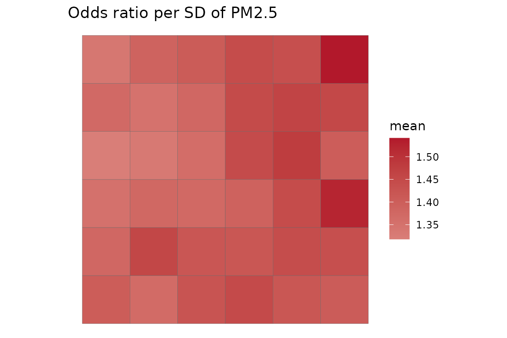
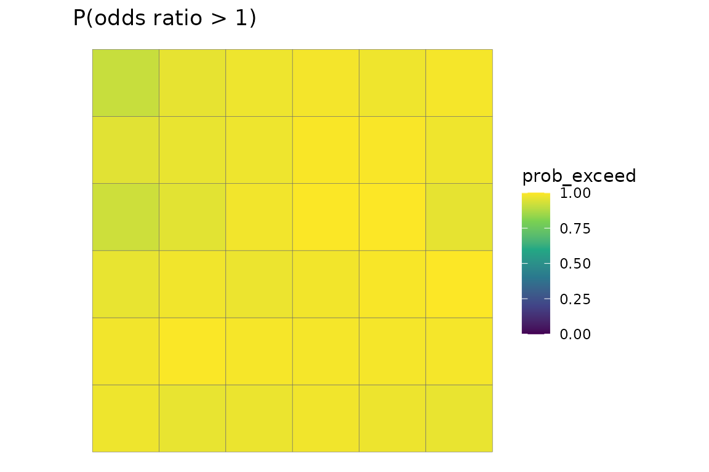

This vignette runs the full workflow on simulated data: a 6 x 6 grid
of areas, 180 clusters displaced as in DHS, and a three-year exposure
raster. With real data, replace svy_simulate() with your
survey, GPS file, GADM boundaries and exposure rasters.
library(svyexpo)
sim <- svy_simulate()
head(sim$survey)
#> id cluster lon lat date weight strata urban age_months
#> 1 C001_01 1 -1.846172 6.171372 2016-06-15 1 A01 FALSE 10
#> 2 C001_02 1 -1.846172 6.171372 2016-06-15 1 A01 FALSE 42
#> 3 C001_03 1 -1.846172 6.171372 2016-06-15 1 A01 FALSE 31
#> 4 C001_04 1 -1.846172 6.171372 2016-06-15 1 A01 FALSE 14
#> 5 C001_05 1 -1.846172 6.171372 2016-06-15 1 A01 FALSE 4
#> 6 C001_06 1 -1.846172 6.171372 2016-06-15 1 A01 FALSE 40
#> y
#> 1 1
#> 2 1
#> 3 1
#> 4 1
#> 5 1
#> 6 11. Ingest
svy_standardize() maps your column names to the standard
schema. For DHS recodes, svy_from_dhs() does this in one
step from the recode and the GPS dataset.
pts <- svy_standardize(
sim$survey,
id = "id", cluster = "cluster", lon = "lon", lat = "lat",
date = "date", weight = "weight", strata = "strata", urban = "urban"
)2. Boundaries
With real data, download boundaries with
svy_boundaries("GHA", level = 2). Clusters displaced into
the sea or across a border are assigned to the nearest area within
max_dist metres.
pts <- svy_assign_areas(pts, sim$boundaries)
#> 40 points outside all polygons assigned to the nearest area.
table(pts$area_match)
#>
#> nearest within
#> 40 35603. Exposure linkage
Buffers are 2 km for urban and 5 km for rural clusters. Each record gets the exposure layer for its interview year. Here we also average the interview year and the year before it.
buffers <- svy_buffers(pts)
expo <- svy_extract_by_year(buffers, sim$raster, window_years = 2,
name = "pm25")
#> Warning: No raster layer(s) for target years 2014; exposure set to NA.
#> ℹ Raster years available: 2014 and 2016.
head(expo)
#> id exposure_year pm25
#> 1 C001_01 2016 47.83446
#> 2 C001_02 2016 47.83446
#> 3 C001_03 2016 47.83446
#> 4 C001_04 2016 47.83446
#> 5 C001_05 2016 47.83446
#> 6 C001_06 2016 47.83446raster can also be a file path or a Cloud-Optimized
GeoTIFF URL ("/vsicurl/https://..."). Only the pixels under
the buffers are read, and cache_file in
svy_extract() saves the result so the raster is read
once.
4. Spatial structure
graph <- svy_adjacency(sim$boundaries)
graph
#> <svy_graph>: 36 areas, 110 neighbour pairs
#> Neighbours per area: min 3, median 5, max 8
#> Connected components: 15. Model
dat <- merge(sf::st_drop_geometry(pts), expo, by = "id")
dat$pm25_z <- as.numeric(scale(dat$pm25))
fit <- svy_fit_bym2(
dat, y ~ pm25_z + urban + age_months, graph,
family = "binomial", svc = "pm25_z"
)
fit
#> <svy_fit>: binomial BYM2 model, 3600 records, 36 areas
#> Spatially varying coefficients: "pm25_z"
#>
#> ── Fixed effects
#> mean sd 0.025quant 0.975quant
#> (Intercept) -1.3355 0.0928 -1.5181 -1.1538
#> pm25_z 0.3344 0.0881 0.1603 0.5060
#> urbanTRUE 0.1133 0.0866 -0.0566 0.2831
#> age_months 0.0109 0.0022 0.0065 0.0153
#>
#> ── Hyperparameters
#> mean sd 0.025quant 0.975quant
#> Precision for svy_area_idx 5.2658 1.6908 2.6960 9.2792
#> Phi for svy_area_idx 0.8759 0.1280 0.5260 0.9970
#> Precision for svy_svc_idx_pm25_z 1333.8657 9098.3563 10.4894 9057.3078
svy_diagnostics(fit)
#> dic waic p_eff_waic log_score cpo_failures
#> 1 3982.78 3982.734 30.63778 0.5531588 06. Outputs
area <- svy_area_effects(fit, exponentiate = TRUE)
slopes <- svy_svc_effects(fit, "pm25_z", exponentiate = TRUE)
head(slopes)
#> area_id mean sd q025 q500 q975 prob_exceed
#> 1 A01 1.404222 0.2274718 1.0030213 1.388687 1.900165 0.975
#> 2 A02 1.368294 0.2050600 0.9674133 1.356612 1.804009 0.964
#> 3 A03 1.424605 0.2613717 0.9769857 1.397174 2.011806 0.969
#> 4 A04 1.448597 0.2590464 1.0329561 1.411948 2.045945 0.979
#> 5 A05 1.418653 0.2624374 0.9922021 1.393247 2.013515 0.973
#> 6 A06 1.405446 0.2397681 0.9516402 1.390613 1.928221 0.967
svy_map(slopes, sim$boundaries, fill = "mean",
title = "Odds ratio per SD of PM2.5")
svy_map(slopes, sim$boundaries, fill = "prob_exceed",
title = "P(odds ratio > 1)")